Introduction
The modal window feature lets you display additional information about an area when a user clicks on it. This can include text, images, links, etc, making the map more interactive and informative.
This feature is included and enabled by default in the WordPress map plugin. To use it, simply install a modal plugin with the CSS selector. We tested the map using the free version of the Popup Maker plugin.
The Steps
Note: The following screenshots were taken from the world map, but the same steps can be applied to any other map.
-
Install the Popup Maker plugin and 'Create New Popup'
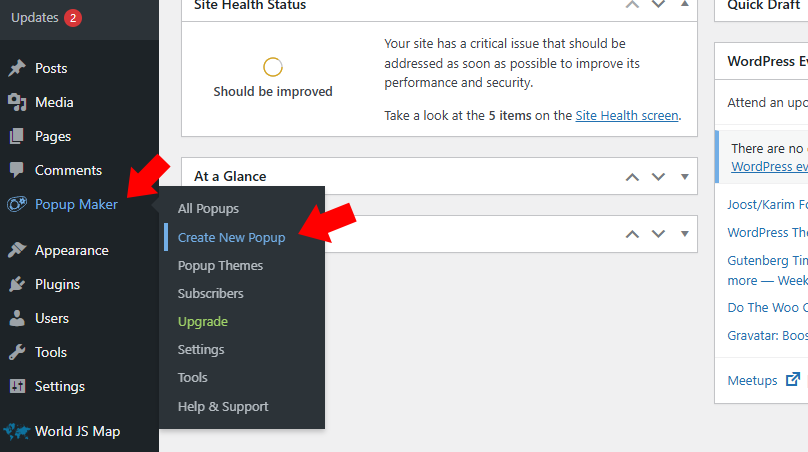
-
Assign a name to the popup for your reference, and in the modal body, include as many details as desired, such as text, images, links, etc, to make the map more interactive and informative.
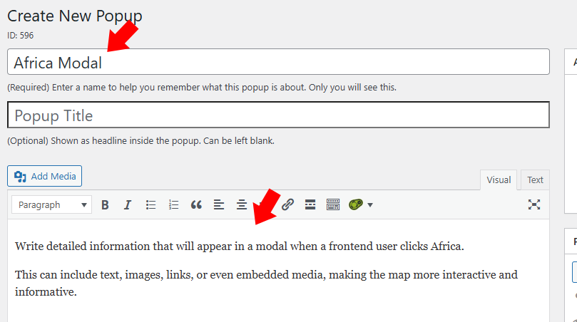
-
Click 'Add New Trigger'
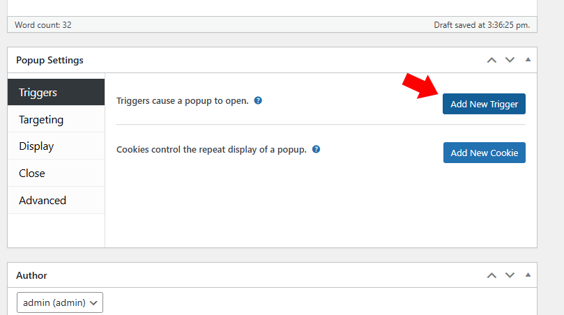
-
Uncheck this checkbox in this window to ensure the modal window appears to the user more than once.
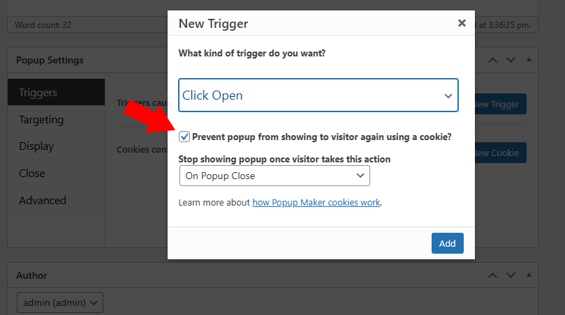
-
Click 'Add'
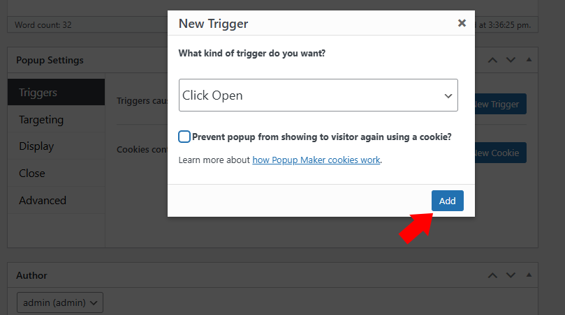
-
For the 'Extra CSS Selector', use a dot followed by the area name.
Here is a list of CSS selectors for all areas on the map of Malaysia. Use each selector to open the corresponding modal window
- .johor-darul-tazim
- .kedah-darul-aman
- .kelantan-darul-naim
- .kuala-lumpur
- .labuan
- .melaka
- .negeri-sembilan-darul-khusus
- .pahang-darul-makmur
- .perak-darul-ridzuan
- .perlis-indera-kayangan
- .pulau-pinang
- .putrajaya
- .sabah
- .sarawak
- .selangor-darul-ehsan
- .terengganu-darul-iman
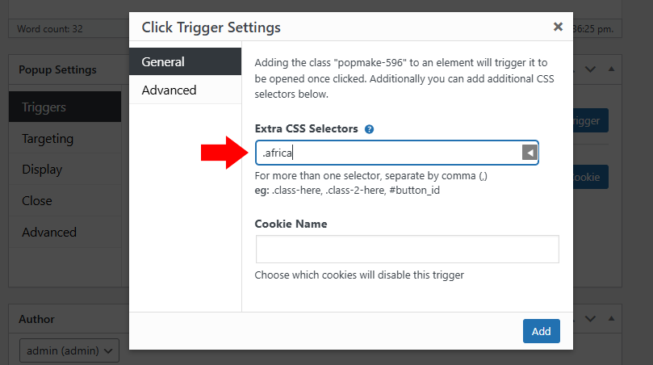
-
You have now assigned a CSS selector.
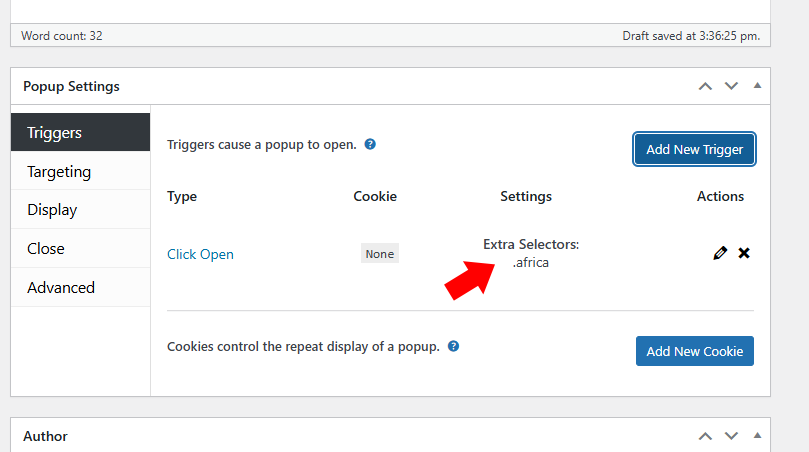
-
'Publish' The popup.
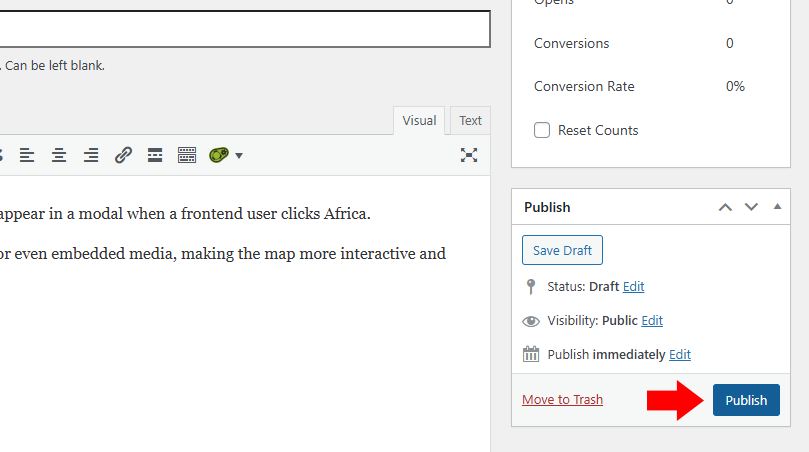
-
On the map dashboard, ensure that 'Target' is set to 'Modal / None'.
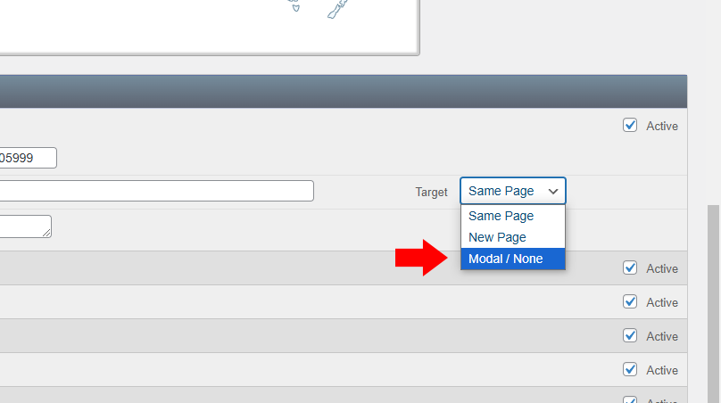
-
Now, you can test the modal window on the frontend pages.
Note. The modal window does not work on the map dashboard.
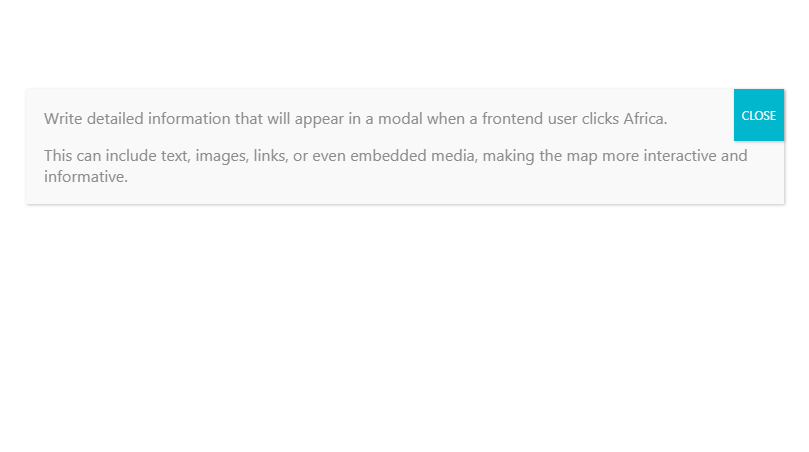
-
You can change the popup theme from 'Popup Maker' > 'Settings'. Additionally, you can customize the theme as desired in 'Popup Maker' > 'Popup Themes'.
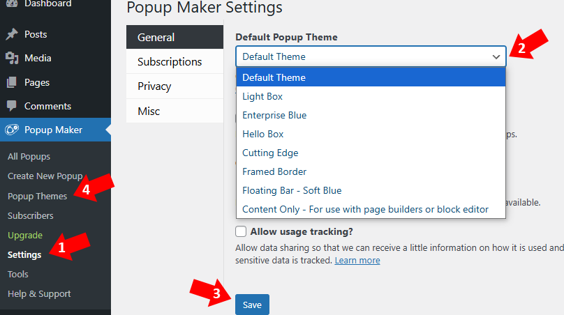
We hope you find this information helpful. If you have any questions or need further assistance, please feel free to contact us.